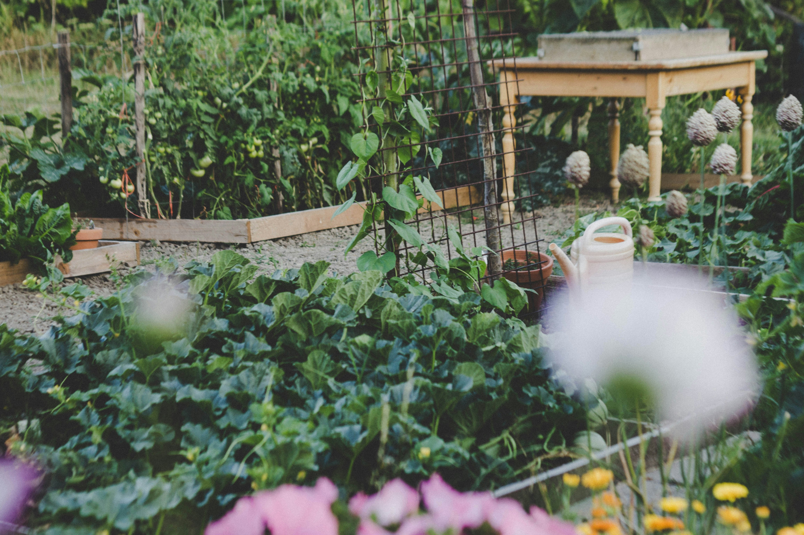

Galerie



💡 Astuces, anecdotes, partage… De quoi éveiller notre côté épicurien, que vous soyez débutant ou expert ! 🌱✨
Contactez-nousCoup de Pousse : Cultivons ensemble pour un avenir plus vert
💬 Déjà en place : Retrouvez nos conseils, anecdotes et astuces jardinage chaque semaine sur TikTok, Facebook et Instagram ! 🌱✨
🛒 Bientôt disponible : Des graines, des outils et bien plus encore pour vous aider à cultiver facilement et naturellement.
Nous mettons à disposition des parcelles de jardinage pour que tout le monde, même sans jardin, puisse faire pousser ses propres fruits, légumes et fleurs, dans un esprit d’entraide et de convivialité. 🌿🤝
Nous vous tiendrons informés de l’avancement de Coup de Pousse et des futures opportunités pour louer une parcelle ou participer à nos événements.
Nous pensons proposer des parcelles de 25 m², mais cela dépendra des réponses du sondage.
Contactez-nous via notre formulaire ou par e-mail pour vous inscrire sur notre liste d’attente.
Actuellement, nous pensons proposé la parcelle au loyer de 20 euros par mois.
Oui, les parcelles peuvent être partagées entre amis ou membres de la famille. Il suffit de préciser lors de votre inscription.
Nous prévoyons de mettre à disposition au fur & à mesure un espace partagé avec certains outils de jardinage de base.
Oui, les parcelles seront accessibles toute l’année, sauf en cas d’intempéries ou d’entretien spécifique nécessitant une fermeture temporaire.
Non, aucune expérience préalable n’est requise. Nous pensons proposer à mesure que le temps passe des ateliers et des conseils pour vous guider. En plus de cela, vous pouvez découvrir divers astuces, conseils sur notre page Facebook.
Oui, nous pensons régulièrement des événements tels que des ateliers de jardinage, des échanges de semences, et des rencontres conviviales.